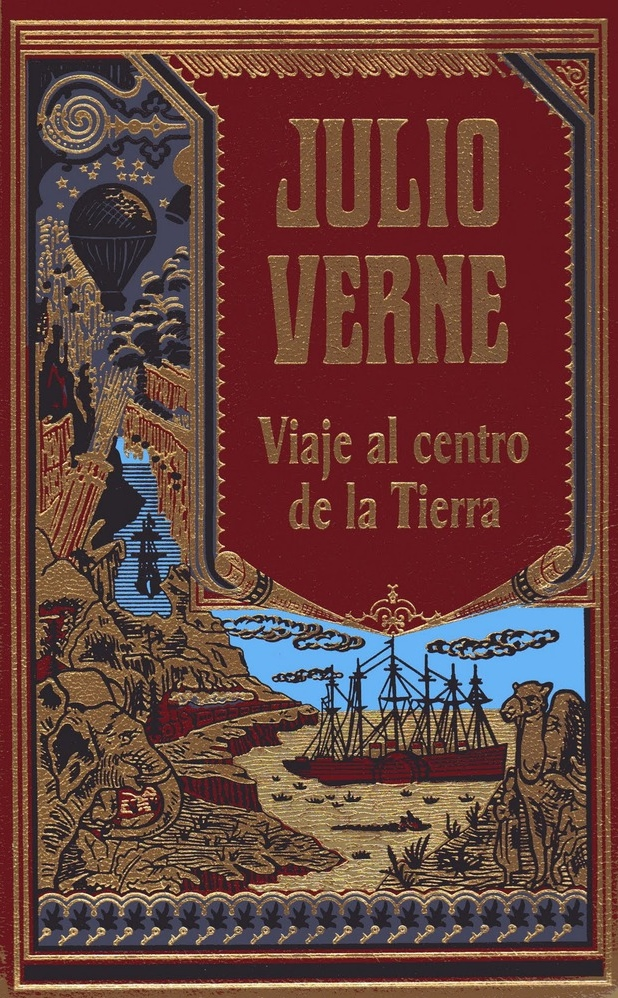
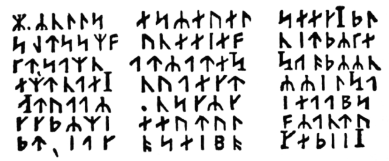

"Viaje al Centro de la Tierra" es una emocionante novela de aventuras y ciencia ficción escrita por Julio Verne y publicada por primera vez en 1864. La historia se centra en el profesor alemán Otto Lidenbrock, un hombre apasionado por la ciencia y la geología. Un día, mientras examina un antiguo manuscrito islandés, descubre un misterioso mensaje cifrado dejado por un alquimista del siglo XVI llamado Arne Saknussemm. El mensaje sugiere que Saknussemm había descubierto un camino para llegar al centro de la Tierra.
Movido por su curiosidad y deseo de aventura, el profesor Lidenbrock se embarca en una misión audaz para seguir los pasos del alquimista y realizar el viaje subterráneo. Su joven sobrino, Axel, quien también es su pupilo, lo acompaña en esta peligrosa travesía. Axel, inicialmente escéptico y temeroso, termina cediendo ante la insistencia de su tío.
Junto con un guía islandés llamado Hans Bjelke, el trío parte hacia Islandia, el punto de partida del viaje. Una vez en Reykjavik, la capital de Islandia, comienzan a descifrar el enigmático mensaje de Saknussemm, que los lleva al cráter del volcán Snæfellsjökull, donde supuestamente se encuentra la entrada al centro de la Tierra.
Adentrándose en las profundidades del volcán, los protagonistas inician un descenso emocionante hacia las entrañas de la Tierra. La narrativa se enfoca en las maravillas naturales que encuentran en su camino, como la Caverna del Rey, un vasto espacio subterráneo con ríos, lagos y vegetación exuberante. La descripción detallada de estos paisajes subterráneos despierta la imaginación del lector y lo transporta a un mundo desconocido y asombroso.

Portada de la novela
a
a
Sin embargo, la aventura también está llena de peligros y desafíos. Los exploradores se enfrentan a situaciones extremas, como la escasez de alimentos y agua, la lucha contra criaturas prehistóricas, la amenaza de gases venenosos y las dificultades para encontrar el camino correcto en la red de túneles y cavernas.
Durante el viaje, la relación entre el profesor Lidenbrock y su sobrino Axel también sufre altibajos. Axel, inicialmente cuestionando la prudencia del viaje, se convierte en un apoyo indispensable para su tío. A pesar de los momentos de tensión, la amistad y el respeto mutuo entre ambos son fundamentales para superar los desafíos que enfrentan en su recorrido.
Luego, después de una serie de emocionantes acontecimientos, los viajeros alcanzan el centro de la Tierra, una vasta cavidad iluminada por una luz desconocida. Descubren un mar interior y tierras pobladas por vegetación y criaturas prehistóricas que han sobrevivido durante millones de años en este mundo oculto.

Ilustración de Édouard Riou empleada en el interior y en la portada de la edición original.
Después de explorar las maravillas del mundo subterráneo, los protagonistas deciden emprender el regreso hacia la superficie. El ascenso no es menos arriesgado que el descenso, y enfrentan peligros adicionales a medida que se aproximan a la superficie terrestre.
Finalmente, después de sobrevivir a numerosos peligros y contratiempos, los exploradores emergen a la superficie, exhaustos pero llenos de conocimiento y experiencia. La novela concluye con Axel expresando su gratitud y reconocimiento hacia su valiente tío y reflexionando sobre los asombrosos eventos que han vivido juntos.
En resumen, "Viaje al Centro de la Tierra" es una cautivadora historia de exploración, aventura y descubrimiento que ha perdurado en el tiempo como una de las obras más queridas e influyentes del género de ciencia ficción y literatura de aventuras. La combinación de maravillas naturales, peligros inminentes y la evolución de los personajes hacen que esta novela siga atrayendo a lectores de todas las edades en busca de emocionantes viajes hacia lo desconocido..

Criptograma que aparece en la obra.